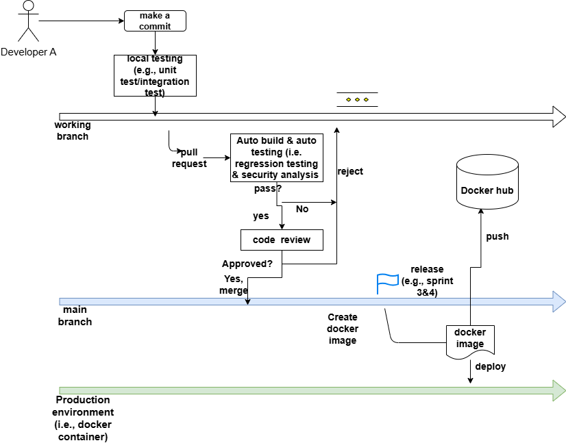

This project requires a team of approximately six members to develop a full-stack web application that meets specific functional, non-functional, and process requirements. You will work as a group throughout the term to build the software system:
The developed software system must satisfy the following criteria:
Full-Stack Architecture: The application must include both a server-side (backend) component and a web client (frontend) component.
Core Features (Functional Requirement): The application must implement a number of core functional features equal to the team size (e.g., a team of 5 must implement 5 core features). This count excludes non-functional requirements.
Capacity Requirement (Non-Functional Requirement): The system must be able to concurrently handle 20 users generating a total of 200 requests per minute.
External Resource Usage: There are no limitations on reusing existing external frameworks, libraries, or services (e.g., a cloud-provided database). You are free to use any such resources, but you must implement the core logic of the specified core features yourself.
In addition to the software system requirements, each team must apply the following techniques and practices throughout the project's lifecycle:
Continuous Integration (CI): Establish a CI pipeline to automate the following steps for every commit pushed to the main branch (Deadline: By the end of Sprint 2):
Auto Build
Regression Testing
Code Review
Continuous Deployment/Delivery (CD): Establish a CD pipeline to automate the system's deployment (Deadline: By the end of Sprint 3):
Security Analysis Integration: Integrate security analysis tools into the established CI pipeline (Deadline: by the end of Sprint 4).
Load Testing: Conduct load testing of the application to verify it meets the capacity requirement (Deadline: by the end of Sprint 4)
Below are more details regarding a recommended CI/CD pipeline and advanced quality assurance (QA) techniques to be applied to your course project (see Figure 1).
Figure 1 CI/CD pipeline

Development: Each developer works on a separate feature branch. They may commit changes to their branch as frequently as needed.
CI pipeline: When a developer is ready to merge their work into the main branch, they must create a pull request. This pull request triggers two validation steps: 1) Automated build and testing; 2) Code review. Typically, the review request is sent to the reviewer only after all automated tests pass. Once the pull request successfully completes both validation steps, it can be merged into the main branch.
This CI pipeline which enables the auto build & testing + code review, should be implemented by the end of sprint 2. However, the test cases that are used by the auto testing can be added gradually as the system grows, You don't have to prepare all the test cases by sprint 2.
CD pipeline: When the team decides to release a new version, such as sprint 3 and sprint 4, the system should be packaged into a docker image and deployed to a docker container hosted somewhere (e.g., local machine, lab machine, or cloud). Afterward, the image should be pushed to DockerHub. The CD pipeline that enables to containerize your system using Docker and push your Docker image to DockerHub automatically, must be implemented by the end of sprint 3.
You may adjust the following settings as needed based on your project and team structure.
Local testing: You have more flexibility on the local testing. Local testing can be conducted on multiple levels (e.g., unit testing, integration testing, and system testing) or only unit testing is conducted. However, 100% back-end code coverage is required, i.e., all the back-end code should be covered by the tese cases.
Production environment: production environment (i.e., docker container) can be hosted either on your local machine, lab machine, or service provider (e.g., AWS). From sprint 3, you need to make your system deployed on Docker and push it to Docker hub. Note that you don't have to host the production environment all the time, which may cost money if you select to use the commercial cloud. Making it work when necessary is enough, e.g., demo and acceptance testing.
Deployment: as we introduced in the class, there are two concepts of CD pipeline, one is continuous deployment and another is continuous delivery. The only difference between them is that in continuous delivery, deployment to production is triggered manually (e..g, click a button to run the pipeline), while in continuous deployment, the deployment is triggered automatically after all validation steps are passed. You may choose either approach based on your project needs.
Do we need a full set of tests (e.g., 10 unit tests and 10 integration tests) for each core feature by Sprint 2?
For unit tests, yes. For every feature you have implemented, you must provide at least 10 unit tests. For example, if you have completed 2 features, you must have at least 20 unit tests (10 per feature).
For integration tests, no. You do not need to complete 10 integration tests by Sprint 2. You can add integration tests gradually as more features are developed.
2. Are the unit tests specifically for back-end code? Or can it be a mix of both front-end and back-end?
They can cover both. Unit tests are intended to check individual program units (e.g., functions, methods, classes) and detect potential bugs across the codebase. However, all back-end source code must be covered by your unit tests. Front-end unit tests are optional but encouraged if feasible.
3. How do we run regression testing?
We will introduce some test selection and prioritization strategies in class, but you are not required to use them (though you may try if interested). For this course, simply running all available test cases is sufficient for regression testing. You can configure regression testing in your build system. For example, if you use Maven, you can enable automated test execution in the pom.xml file.
4. Which CI/CD tools should we use?
It is flexible to choose the CI/CD tool your team wish to use. The class will introduce using Jenkins for CI/CD and Git Action. I would say choose the tool you are most comfortable to use.
5. Do I need to generate a Docker image for both the front end and back end? Yes. You need to generate Docker images for both. You may choose to package them together in a single image or separately in individual images.
6. Must I package all my services/apps into one single Docker image? No. You may use multiple Docker images. For example, if you are using a microservices architecture, each service can be packaged in its own Docker image.
7. What if my team members do not progress or work well?
Peer evaluation is used to assess the performance of each member in the team. The commits made in GitHub will also be considered when grading each team member.
8. Should I use a particular coding convention?
No. You can use any style of coding convention, as long as the code is readable and consistent across your codebase. Note that, decide the coding convention AS EARLY AS possible. It takes remarkable efforts to fix it in the later sprints.
To get some flavor how the project looks, here are some examples of course projects by previous teams. Note that they are not perfect and some of them might not meet all requirements.
The project will be evaluated as follows:
For the project grade for each individual member, a peer evaluation will be conducted on each team member and the final grade for project will be weighted on it.
Each team will need submit a project proposal, which includes project summary, core features, user stories, and present their proposed project in the class.
Your work on the software will be evaluated periodically (4 sprints); thus, regular and continuous progress is expected. The system will be completed before the end of the term. Each team will arrange time to meet with TA at the due of each sprint to evaluate their progress based on the marking scheme below and get feedback.
Sprint 1 (Deadline - Week4)
Sprint 2 (Deadline - Week8)
Sprint 3 (Deadline - Week11)
Sprint 4 (Deadline - Week12)
The purpose of the seminar is to share knowledge and experience among teams. The topic of the seminar could be technology, design choice, challenges you faced and how you solved them, and lessons have learned, etc.
The seminar should be 15 mins (13 minutes for presentation, 2 mins for Q&A ) for each team.
Each team will give a 15-minutes (13 minutes for presentation, 2 mins for Q&A ) to introduce their project.
Covered in the presentation:
1) Quick recap of the project (~1 minutes)
2) Demo of the project (~6-7 minutes)
3) Discussion of the development process (6-7 minutes). You can choose a few of the following items to discuss, or something else you find interesting or relevant (avoid having overlap with your seminar presentation):
Marking scheme
Because this is a design-focused project, it is not feasible to define precise, objective grading criteria. Instead, we will use a ranking-based evaluation system for the project presentations. Your ranking will naturally depend on what other teams produce, essentially a market-based comparison. Teams that deliver the most impressive and polished work will receive the highest ranks.
This also means that if your final grade is lower than expected, it does not necessarily indicate poor work. Rather, it reflects that other teams performed better in this comparative evaluation.
Grades will be scaled to the range [5, 10] using the following formula:
Grade = 10 - (rank - 1) * 5 / (number_of_teams - 1)
Under this scheme, the top-ranked team receives 10, and the lowest-ranked team receives 5.
We will invite all other teams to evaluate your project. The weighting between peer evaluation and instructor evaluation is 70% (peers) and 30% (instructor).
The evaluation consists of two main components:
Each team is responsible for maintaining their code (source code, test cases, and configuration files) and documentation (e.g., release notes, proposals, design reports, testing reports, meeting records, and issue reports) on GitHub. The GitHub repository will serve as the final project deliverable. Please note that any discrepancies between the GitHub repository and submitted documentation will not be considered, and the final delivery mark may be penalized accordingly.
Reports will be evaluated based on technical content and clarity of presentation. However, fulfilling all listed requirements does not guarantee the maximum grade. For example, a technically perfect report for a mediocre project (e.g., one with crashes or bugs) may still receive a low overall grade. Therefore, the overall quality and impact of the project relative to other teams is the key factor in determining the grade.
As with the final presentation, a ranking-based system will be used for grading. Teams that produce the most impressive project and documentation will receive the highest ranks. Grades will be scaled to the range [10, 20] using the following formula:
Grade = 20 - (rank - 1) * 10 / (number_of_teams - 1)
Each team member will be evaluated based on their performance in the project by other team members and the evaluation result will be counted into their final project grade. For instance, if a member gets 8/10 from peer evaluation, and the grade for the project is 50/60, then the final project grade for this member is 50*0.8= 48. Note that the grade of each individual team member cannot exceed 60.